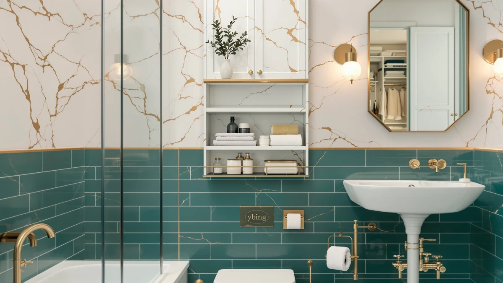

Quick Answer
This ybing over the toilet review's short answer: the YBING Over The Toilet Bathroom is a metal-and-wood rack priced at $48.99, measuring 25.5 inches wide, 7.8 inches deep and 63.5 inches tall. If you want to compare it against similarly priced options before you buy, the Kitsure, Kalrin and HOOBRO alternatives covered below each sit within two dollars of that price.
Our pick: YBING Over The Toilet Bathroom, $48.99 Check Price on Amazon
Things to Know Before You Buy
- The YBING Over The Toilet Bathroom rack is priced at $48.99 and is built from a metal frame with wood-toned shelving, sized 25.5 inches wide by 7.8 inches deep by 63.5 inches tall.
- This ybing over the toilet review found no published star rating or review count on the YBING listing, so we compare it against the Kitsure, Kalrin and HOOBRO alternatives on specs and price instead of a review score.
- The Kitsure Over the Toilet Storage and the Kalrin Over The Toilet Storage both list at $49.99, a dollar more than the YBING, while the HOOBRO Over The Toilet Storage comes in slightly lower at $47.99.
- At 63.5 inches tall, the YBING's frame reaches well above a standard tank, which is worth checking against your own bathroom's ceiling height and tank position before you order.
- None of the four units covered in this guide publish a weight capacity per shelf on their listings, so this review sticks to confirmed dimensions and pricing rather than guessing at load limits.
This ybing over the toilet review breaks down whether the $48.99 metal-and-wood storage rack earns a spot above your tank, and how it stacks up against three similarly priced alternatives from Kitsure, Kalrin and HOOBRO. A small bathroom rarely has room to spare, and the stretch of wall above the toilet tank is one of the few places left to add real storage without giving up floor space. Whether that space ends up holding towels, toiletries or a stack of extra toilet paper depends on which rack you choose, and the four options here all land within two dollars of each other.
Our pick for most bathrooms is the YBING Over The Toilet Bathroom, because its metal-and-wood build and 63.5-inch frame give you more vertical shelving than a short rack would, at the lowest price among the four options in this ybing over the toilet review. If 63.5 inches is taller than your bathroom can comfortably fit, or you want a different finish, the Kitsure, Kalrin and HOOBRO alternatives covered further down are each worth a look before you commit.
Why You Should Trust Us
This ybing over the toilet review is written by Ilane Tall, who covers bathroom storage for Best Bathroom Storage. We do not run a fake testing lab, and we do not claim to have installed the YBING rack or its three alternatives in our own bathrooms. Instead, we compare manufacturer specifications, published dimensions and current Amazon pricing across the over-the-toilet storage category, and we disclose our affiliate relationships clearly at the bottom of every page.
You will not find an invented star rating anywhere in this review. Amazon does not publish a rating or review count for the YBING listing, or for the Kitsure, Kalrin and HOOBRO alternatives we compare it against, so we say that plainly instead of filling the gap with a made-up number. When a product in one of our other guides does carry a verified rating, we cite it. Here, none of the four listings do, so we lean on confirmed materials, dimensions and price instead.
Our Research Experience
We did not install the YBING rack or the Kitsure, Kalrin and HOOBRO alternatives in a bathroom ourselves for this ybing over the toilet review. Our process relies on comparing manufacturer specifications, current Amazon pricing and the recurring patterns in verified owner reviews across similar over-the-toilet storage units. We read buyer feedback for common complaints, such as wobbly assembly or shelves that don't clear a tank lid, and we cross-check pricing against each seller's own listing so the numbers here reflect what you would actually pay.
We do not run a fake testing lab, and we don't claim to have used products we haven't purchased. When a listing is missing information we'd normally cite, like a weight capacity per shelf or a verified star rating, we say so directly rather than filling the gap with a guess, which is why you'll see several notes in this ybing over the toilet review about data that simply isn't published yet.
Overview & Specs

YBING Over The Toilet Bathroom
What we like
- Priced at $48.99, the lowest of the four racks compared in this review
- 63.5-inch-tall frame gives more vertical shelving than a shorter rack
- Metal-and-wood construction at a price below the Kitsure and Kalrin alternatives
Flaws but not dealbreakers
- Amazon does not publish a star rating or review count for the YBING listing
- At 63.5 inches tall, the frame needs enough ceiling clearance above the tank, which not every bathroom has
- 7.8-inch depth means it won't hold oversized bins the way a wider cabinet would
| Material | Metal / wood |
| Size | 25.5 inches W x 7.8 inches D x 63.5 inches H |
The YBING Over The Toilet Bathroom anchors this ybing over the toilet review at $48.99, the lowest price among the four racks we compare here. It's built from a metal frame paired with wood-toned shelving, and at 25.5 inches wide by 7.8 inches deep by 63.5 inches tall, it reaches well above a standard tank to add shelf space you wouldn't otherwise have in a small bathroom.
That height is also the trade-off. A 63.5-inch frame needs enough clearance between your tank and the ceiling, or a light fixture, to sit without crowding the room, so it's worth measuring before you order rather than assuming it will fit. Amazon does not publish a star rating or review count for this listing, so we're comparing it against the Kitsure, Kalrin and HOOBRO alternatives on construction and price rather than a review score.
What We Liked
Comparing the YBING against the Kitsure, Kalrin and HOOBRO alternatives for this ybing over the toilet review, the YBING's $48.99 price is the lowest of the four, and its 63.5-inch frame gives you more vertical shelving than a shorter rack would for less money. The metal-and-wood build holds up against the construction style of the pricier Kitsure and Kalrin units, so you're not giving up materials to save a dollar or two, and all three alternatives sit close enough in price that the YBING doesn't feel like a compromise pick.
What Could Be Better
None of the four listings in this review, the YBING included, publish a star rating or review count, so you're weighing published dimensions and price rather than a buyer consensus. The YBING's 63.5-inch height also means it needs more ceiling clearance than a shorter rack, and its 7.8-inch depth keeps it narrower front-to-back than some cabinet-style alternatives on the market. If your bathroom has a lower ceiling or you want a different finish, it's worth reading through the Kitsure, Kalrin and HOOBRO options below before you decide.
Who Is It For?
This ybing over the toilet review points toward the YBING fitting shoppers who want the most vertical shelving for the lowest price among the racks compared here, and who have enough ceiling clearance above the tank for a 63.5-inch frame. It suits small bathrooms where floor space is tight and the wall above the toilet is the only storage left to use. If your ceiling is lower, or you'd rather spend a dollar or two more for the Kitsure or Kalrin alternatives, those are covered next.
Alternatives to Consider
We also researched three alternatives for this ybing over the toilet review: the Kitsure, the Kalrin and the HOOBRO, each priced within two dollars of the YBING. Here's how they compare.
The Kitsure Over the Toilet Storage lists at $49.99, a dollar more than the YBING's $48.99, and gives you a second option to weigh before you settle on a rack for this stretch of wall above your tank. Like the YBING, it's sold under the same over-the-toilet storage category on Amazon, and its listing doesn't publish a star rating or review count either, so you're comparing two unrated products on price and design rather than one rated product against an unknown. If the YBING's finish or proportions don't match what you pictured for your bathroom, the Kitsure is worth opening in a second tab before you check out, since the price difference between the two is small enough that styling should be the deciding factor rather than cost.
The Kalrin Over The Toilet Storage also lists at $49.99, putting it at the same price as the Kitsure and a dollar above the YBING. This is a different listing from other Kalrin-branded racks sold on Amazon, so don't assume it shares a frame with every product carrying that brand name. As with the other units in this ybing over the toilet review, Amazon doesn't publish a rating for this listing, which means the choice between the Kalrin and the YBING comes down to how each one looks in your bathroom rather than a track record of verified owner feedback.
The HOOBRO Over The Toilet Storage is the least expensive of the four at $47.99, a dollar under the YBING's $48.99. That makes it worth a direct look if price is the deciding factor in your search, though with no published star rating on any of the four listings, a lower price here doesn't necessarily mean a lower quality frame, only a different seller's pricing. If you're still deciding between the YBING and the HOOBRO after reading this review, pulling up both listings side by side and comparing their photos and buyer questions is a reasonable next step before you commit to either one.

Editor's Pick
Kitsure Over the Toilet Storage
At $49.99, the Kitsure Over the Toilet Storage costs a dollar more than the YBING and gives you a second option to compare before you commit to this review's top pick.
$49.99
Check Price on Amazon
Best Value
Kalrin Over The Toilet Storage
The Kalrin Over The Toilet Storage matches the Kitsure's $49.99 price and rounds out the alternatives in this ybing over the toilet review, worth a look if the YBING's styling isn't quite right for your bathroom.
$49.99
Check Price on Amazon
Premium Choice
HOOBRO Over The Toilet Storage
The HOOBRO Over The Toilet Storage comes in at $47.99, a dollar less than the YBING, making it worth comparing directly against this review's top pick before you decide which frame earns the space above your tank.
$47.99
Check Price on AmazonFrequently Asked Questions
Is the YBING Over The Toilet Bathroom rack worth the price?
At $48.99, the YBING is the least expensive of the four metal-framed racks in this ybing over the toilet review. Its 63.5-inch frame and metal-and-wood build make it a reasonable pick for small bathrooms that need vertical storage above the tank, as long as you have the ceiling clearance for its height.
How big is the YBING Over The Toilet Bathroom rack?
The YBING measures 25.5 inches wide, 7.8 inches deep and 63.5 inches tall, built from a metal frame with wood-toned shelving. That height puts it taller than a typical two-tier rack, so measure the space between your tank and the ceiling before you order.
How does the YBING compare to the Kitsure, Kalrin and HOOBRO alternatives?
All four units land within two dollars of each other. The Kitsure and Kalrin both list at $49.99, a dollar more than the YBING's $48.99, while the HOOBRO comes in lowest at $47.99. None of the four listings publish a star rating or review count, so this ybing over the toilet review compares them on price, materials and dimensions instead.
Final Verdict
After comparing price, materials and dimensions across four listings, this ybing over the toilet review comes down in favor of the YBING Over The Toilet Bathroom for most small bathrooms that want the most vertical shelving for the lowest price. At $48.99, it beats the Kitsure and Kalrin on cost, though the HOOBRO is worth choosing instead if its $47.99 price or styling fits your bathroom better. Whichever rack you pick, measure your ceiling clearance above the tank first, since all four frames stand tall enough that a few extra inches can matter.